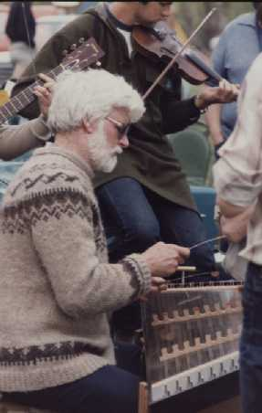
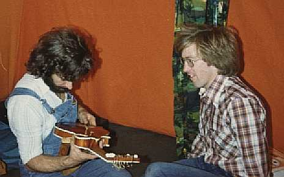
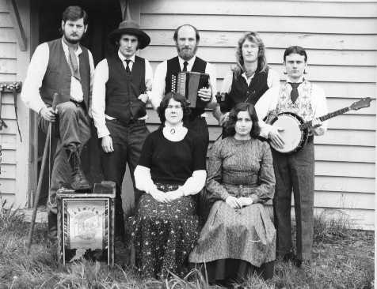
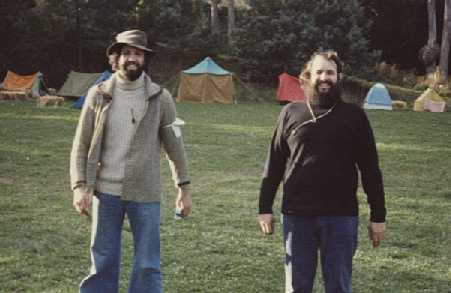
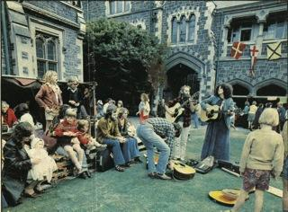
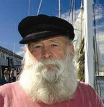

HOME
ARTISTS
CLUBS
FESTIVALS
INSTRUMENTS
LINKS
NZ TOURS
PHOTOS
RESOURCES
SESSIONS
TUNES
UPDATES

Photographs

David Cloughley (playing hammered dulcimer) and son Robert (playing
fiddle). Cardrona, October 1983.

Jeremy Brookes (L) and Barrie MacDonald (R) at Cardrona, March 1979.

Ginger Minge Binge Bush Band. October 1978. Back Row: Martin Simpson, Rob
Doesburg, Peter Walton, Jono Lonie, Marcus Turner. Front Row: Adie Walton,
Trish Davidson.

Mike (L) and Phil (R) Garland at the Canterbury Folk Festival, at Diamond
Harbour, Easter 1979.

Description from Frank Povah: "It's from the NZ Women's Weekly (I kid you
not) sometime in the 70s at the old Canterbury University soon after the
long battle that saw it saved as an arts centre. In the pic are Anne
Davies and Frank Scaglione (bending over) and me. Seated (that I can
remember) are Sue Lutkenhouse (closest to Frank S) and Peter Meredith[?]"

Frank Povah